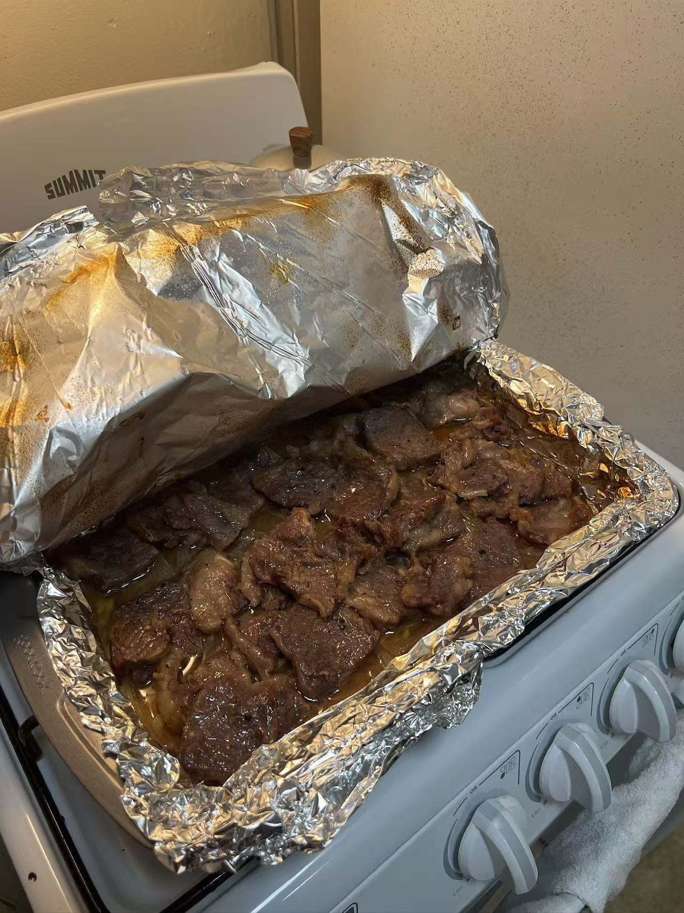
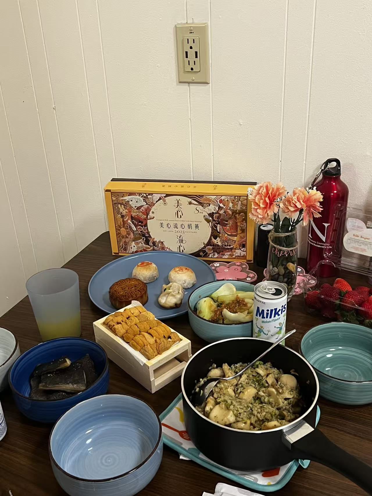
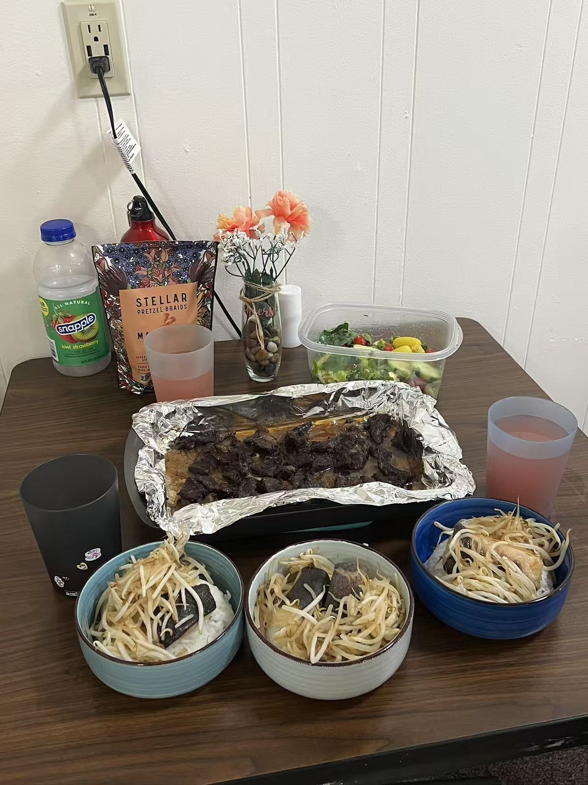

Beyond my academic pursuits, I am deeply engaged in activities that require meticulous precision and logical deduction. I am an enthusiast of detective cinema and mystery literature, which cultivate my problem-solving abilities. Furthermore, I regularly visit art galleries and museums to gain cross-cultural perspectives on historical and modern innovation.
Baking serves as my personal laboratory for precision; the discipline required to control chemical reactions and measurements in the kitchen mirrors the rigor I apply to data analytics.


